地政学
キガリは小国ルワンダの首都として、五大湖地域の安全保障、援助外交、東アフリカ共同体、会議外交を束ねます。内陸国の制約を航空、道路、行政効率で補い、国家の方向性を都市空間にも映す首都です。外交軸になります。
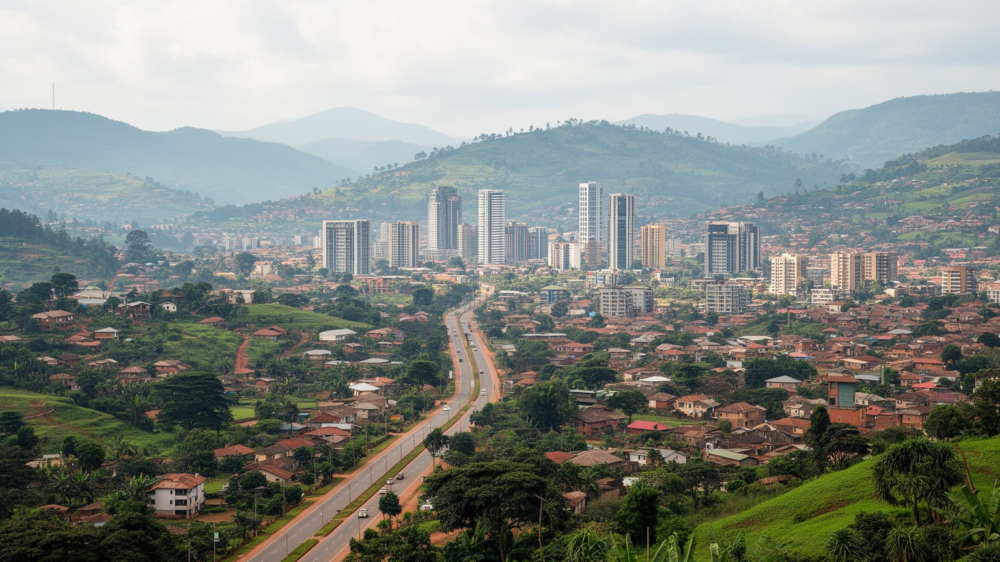
🇷🇼 ルワンダ / アフリカ / World City Atlas
千の丘の国の首都です。行政、ICT、会議観光、記憶の政治、丘陵住宅、清潔な街路、地域統合が重なる東アフリカの成長都市です。
都市の骨格
キガリはルワンダ中央部の丘と谷に広がり、行政、記憶、ICT、会議観光、住宅開発を結びます。清潔で秩序ある都市像の背後には、急成長の圧力と生活費の問題もあります。
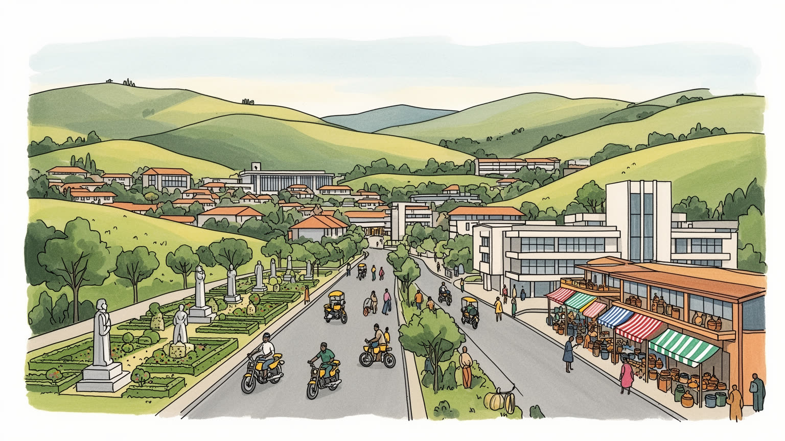
キガリは小国ルワンダの首都として、五大湖地域の安全保障、援助外交、東アフリカ共同体、会議外交を束ねます。内陸国の制約を航空、道路、行政効率で補い、国家の方向性を都市空間にも映す首都です。外交軸になります。
行政、金融、ICT、建設、会議観光、ホテル、交通、工芸、小売が雇用を作ります。整った街路の背後では、若者の職探し、非公式商い、家事労働、バイクタクシー、住宅費の上昇が生活を左右します。技能教育も日々問われます。
キニアルワンダ語の生活、教会、モスク、共同清掃、工芸、音楽、追悼、サッカー観戦が都市の暦を作ります。記憶は政治と教育に深く入り、和解と沈黙の緊張も日常の作法に残ります。家族の祈りと路上の音も支えます。
記念館、市場、丘の眺望、工芸店、カフェ、会議施設は観光客を引きます。一方で住民には坂道、雨、家賃、通勤、学校、医療、郊外化、買い物と夜の移動が現実です。訪問者の視線も静かに試されます。
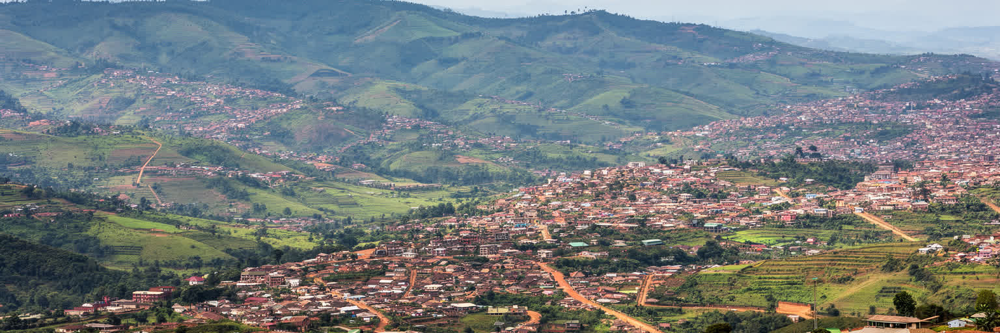
キガリは「千の丘の国」と呼ばれるルワンダの中央部にあり、平らな大都市ではなく、尾根、谷、湿地、斜面が細かく組み合わさった首都です。行政地区、住宅地、市場、工業用地、ホテル、学校は丘の上と谷筋に分かれ、短い距離でも坂が生活の負担になります。眺望のよい尾根は政府施設、住宅開発、ホテル、会議施設に向き、低地や谷は排水、湿地保全、交通の問題を抱えます。雨季には斜面の土砂、舗装の傷み、排水の詰まりが移動や住環境に響くため、都市計画は景観づくりだけでなく災害管理でもあります。丘陵都市であることは、キガリの美しさを作ると同時に、公共交通、歩行、住宅価格、インフラ整備の難しさを生みます。高台から見える整った街並みの下には、谷を越えて通勤し、坂を歩き、雨の流れを気にする日常があります。中心部から周辺へ向かうほど、舗装や排水、街灯、公共サービスの密度は変わり、住民の移動費と時間も増えます。丘は景観資源であるだけでなく、誰が便利な場所に住めるかを決める社会的な境界にもなります。谷筋の市場やバス停は地区を結ぶ結節点になり、斜面の小道は近所づきあいと危険の両方を運びます。土地利用の線引きは、将来の水害リスクや通勤の負担にも直結します。都市を読むには、中心部の清潔さだけでなく、斜面の集落、湿地の扱い、道路の勾配を重ねて見る必要があります。暮らしの距離感も変わります。
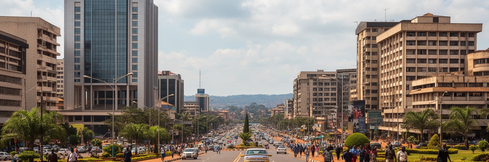
キガリはルワンダの行政首都であり、国家の再建と統治の方向を強く示す都市です。政府機関、議会、大使館、国際機関、治安機関、会議施設が近距離に集まり、五大湖地域の安全保障、援助、投資、開発政策がここで調整されます。1994年のジェノサイド後、政府は秩序、清潔さ、行政効率、治安、汚職抑制を都市の顔として打ち出し、キガリはその成果を外へ見せる舞台になりました。街路の清掃、建築規制、公共空間の管理、月例の共同清掃は、日常生活の中で国家の方針を感じさせます。一方で統治の強さは、参加の幅、表現の自由、住民移転、非公式商いの扱いをめぐる緊張も伴います。首都で働く人びとは、国家機関、NGO、ホテル、警備、清掃、運転、翻訳、建設を通じて、その統治の現場を日々支えています。外交都市としての顔は、会議場だけでなく、空港から中心部へ続く道路や宿泊施設の管理にも表れます。政策の成功が都市景観として示されるほど、首都は国内外へ向けたショーケースになります。だからこそ、都市の整然さを支える手続き、規制、住民の参加のあり方まで見る必要があります。キガリの地政学は、国境から離れた穏やかな丘の風景だけでは説明できません。周辺国との関係、難民、平和維持、援助外交、英語化、東アフリカ共同体への接続が、首都の制度と道路に表れています。秩序ある都市像を読むほど、その秩序が誰の声を強め、誰の生活を見えにくくするのかも問われます。
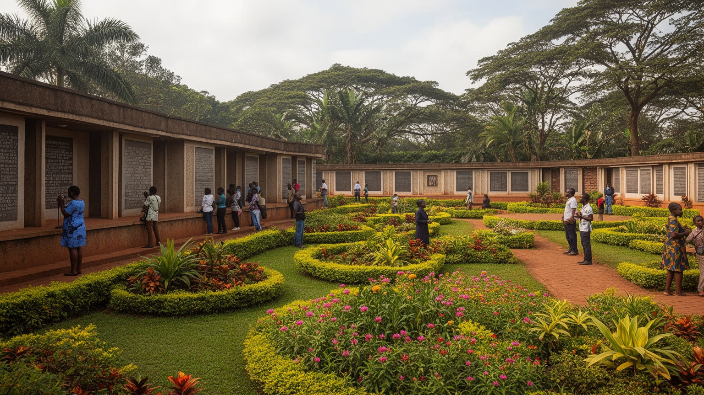
キガリを語るとき、ジェノサイドの記憶を避けることはできません。記念館、追悼式、学校教育、公共の言葉は、暴力の歴史を忘れないための制度であり、同時に国家再建の物語を支える装置でもあります。追悼の場では、犠牲者の名前、写真、遺骨、証言が個人の生活を取り戻し、統計では見えない喪失を都市の中心に置きます。観光客にとって記念館は訪問先の一つに見えますが、住民にとっては家族史、近隣関係、沈黙、和解、法、教育が重なる深い場所です。記憶の政治は慎重さを求めます。暴力の原因を単純化せず、被害と責任を曖昧にせず、同時に現在の社会で人びとが共に暮らす方法を探さなければなりません。家庭、教会、学校、近所の会話には、語れる記憶と語りにくい記憶が並びます。若い世代は直接の経験を持たなくても、追悼の制度や家族の沈黙を通じて過去と向き合います。都市の追悼空間は観光施設ではなく、教育、司法、家族の悲しみ、国家の語りが交差する場所です。訪問者には静かに学ぶ姿勢が求められ、写真や消費の感覚だけでは届かない重さがあります。追悼は過去に閉じた儀礼ではなく、差別を再び許さない社会をどう作るかという現在の問いです。キガリの清潔で静かな印象の背後には、深い喪失と再出発の努力があります。その重さを理解して初めて、都市の秩序や発展も別の角度から見えてきます。記憶は街を支えます。
キガリの産業政策は、内陸国の制約を知識、サービス、会議、ICTで補おうとする国家戦略と結びついています。金融、通信、行政サービス、ソフトウェア、スタートアップ支援、教育機関、ホテル、会議施設が集まり、都市はルワンダ経済の大きな比重を担います。国際会議を誘致し、空港や道路を整え、英語とデジタル行政を前面に出す姿勢は、東アフリカのビジネス拠点を目指します。ただし高度なサービス産業が伸びても、すべての若者が専門職へ入れるわけではありません。建設、清掃、警備、調理、家事労働、バイクタクシー、小売、修理の仕事が都市の毎日を支え、賃金と生活費の差が大きな問題になります。農村から来る若者にとって、首都は機会であると同時に競争の場でもあります。職業訓練、英語、デジタル技能、信用へのアクセスがなければ、成長産業の入口は狭くなります。中小企業や工芸、食品加工、修理業も、都市の雇用を広げる現実的な基盤です。成長戦略が外向きの投資だけに偏れば、低所得の働き手は都市の成功を支えながら恩恵を受けにくくなります。デジタル化は手続きを速くする一方、端末、通信費、言語、技能が足りない人を置き去りにしやすい面があります。ラジオ、新聞、SNSは求人、交通、政治の空気を伝え、若者の学び方も変えます。会議場の照明、ホテルのベッドメイク、道路工事、露店の軽食、配送の時間管理まで含めて、都市経済の実体があります。
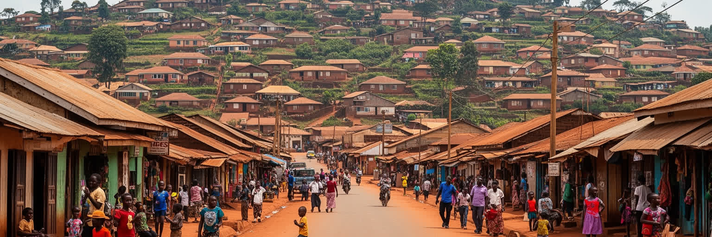
キガリの暮らしには、秩序ある都市イメージと住宅費の重さが同時にあります。中心部や新興住宅地では舗装道路、照明、警備、近代的な店舗、学校、病院へのアクセスが整い、国際機関職員や専門職、起業家が住む地区も増えています。反対に、低所得世帯は家賃、斜面の安全、通勤、給水、排水、学校費、医療費を慎重にやりくりします。都市美化や再開発には災害リスクを下げ、景観を整える効果がありますが、非公式な住まいや小商いを中心部から遠ざけることもあります。坂の多い地形では、距離だけでなく標高差が生活時間を決めます。市場へ行く、子どもを学校へ送る、雨の日に職場へ向かう、病院まで移動するという行為が、収入や住所で大きく変わります。家庭では、都市で働く人から農村の親族へ送金する関係も続き、首都の家計は地方とのつながりを抱えています。家賃が上がるほど、若者や単身労働者は共同生活や遠距離通勤を選ばざるを得ません。生活の安定には、正式な住宅だけでなく、近所の店、通学路、給水、教会や親族の支えも必要になります。都市計画が住民の小さな生活圏を壊すと、通勤と家計の負担は一気に増えます。キガリの住まいを読むには、清潔な通りだけでなく、家賃、通勤費、地域の助け合い、都市計画による移転の影響を見る必要があります。都市が成長するほど、住民が中心に近い場所で暮らし続けられるかが重要になります。
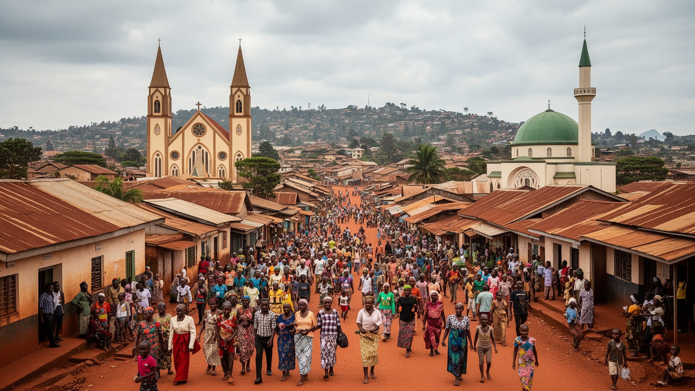
キガリの宗教生活は、教会、モスク、小さな礼拝所、学校、家族行事、地域の相互扶助を通じて都市に深く入り込んでいます。キリスト教会は礼拝、合唱、教育、結婚、葬儀、相談、慈善を担い、イスラム共同体も商業、祈り、学び、近隣の支えを作ります。信仰は個人の内面だけでなく、日曜日の移動、服装、家族の祝い、困った時の助け合いとして街に現れます。月例の共同清掃ウムガンダも、宗教ではありませんが共同体の規範を都市空間へ表す重要な制度です。住民が道路を掃除し、草を刈り、公共の場所を整える行為は、清潔な都市像を支える一方、参加の義務や地域の視線も伴います。ジェノサイド後の社会では、共同体という言葉に希望と緊張の両方があります。教会やモスクは心の支えであるだけでなく、仕事の紹介、病気の相談、学費の助け、弔いの準備を担うこともあります。移住者にとっては、同じ言葉や出身地の人に出会う入口にもなります。若い世代は合唱、サッカー、奉仕活動、学校の仲間を通じて、新しい都市的な共同体も作ります。夜には小さなバーや音楽の場が開き、家族連れは礼拝後に買い物や食事へ向かいます。高齢者は教会の訪問や近所の見守りに支えられます。キガリの文化を読むには、工芸や音楽だけでなく、礼拝後の会話、葬儀の支え、清掃の日の沈黙と協力を見る必要があります。週末の街も変わります。
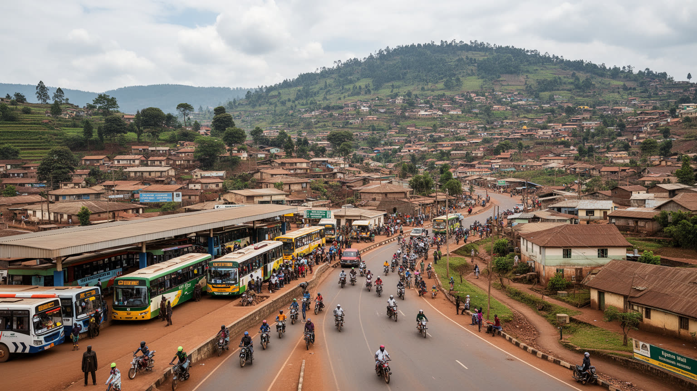
内陸国ルワンダにとって、キガリの交通は国内移動だけでなく、国の外との接続を意味します。空港は会議外交、観光、貨物、国際機関の移動を支え、道路はウガンダ、タンザニア、ブルンジ、コンゴ民主共和国方面との物流に関わります。海港を持たないため、輸入品は長い陸路を経て届き、燃料、建材、機械、食料の価格は国境手続きや周辺国の道路事情にも左右されます。市内ではバス、ミニバス、バイクタクシー、徒歩が主要な移動手段で、丘陵地形が路線と時間を複雑にします。バイクタクシーは速く柔軟ですが、安全、保険、料金、天候の問題を抱えます。公共交通の改善は、若者、低所得者、郊外住民が仕事や学校へ届くための条件です。歩道、停留所、夜間照明、雨を避ける場所が不足すれば、短い移動でも負担は大きくなります。物流の遅れは店頭価格に表れ、通勤の遅れは家族の時間を削ります。坂の多い都市では、徒歩圏といっても体力や年齢で意味が変わります。子ども、高齢者、障害のある人にとって、歩きやすさは都市の公平性そのものになります。交通政策を会議客や投資家の移動だけで考えると、住民の日常が見えなくなります。キガリの道は、首都の見せ方、内陸国の弱点、地域統合の希望、通勤の疲労を同時に運びます。新空港や幹線整備の議論も、都市の外向きの顔と生活の足をどう両立させるかにかかっています。日々の通学も左右します。
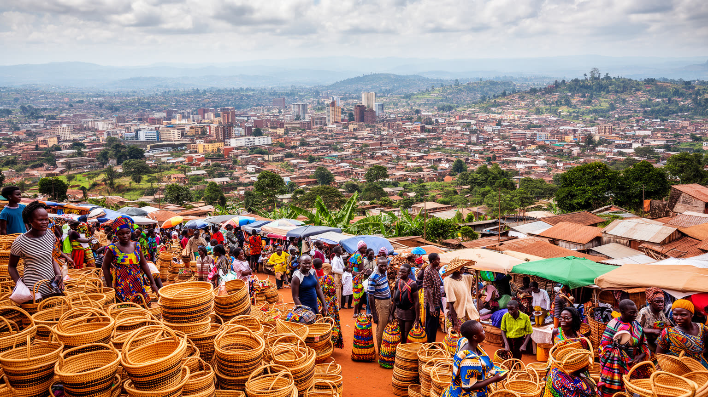
キガリ観光は、記念館、丘の眺望、市場、工芸、カフェ、会議施設を組み合わせて体験されます。訪問者はジェノサイド記念館で歴史の重さに向き合い、ニャミランボやキミロンコ市場で布、食材、日用品、工芸に触れ、高台から整った街並みを眺めます。国際会議やビジネスで訪れた人が短時間で都市を歩ける点も、キガリの観光の特徴です。工芸品やファッション、コーヒー、現代アートは、ルワンダの地域文化と都市の新しい消費を結び、女性協同組合や小規模事業者の収入にも関わります。ただし観光が「清潔で安全なアフリカの首都」という単純な印象だけで消費されると、歴史、貧困、移転、労働、政治の複雑さが薄れてしまいます。訪問者は安全で整った都市を楽しみながら、その秩序がどのような政策と労働で保たれているかを考える必要があります。土産物の価格交渉やガイドの説明にも、国の記憶と生活費の現実が重なります。コーヒー店やギャラリー、夜のライブ、週末の買い物は新しい中間層の場であり、地元の生活感覚と離れる価格も見せます。観光の成功は、住民の誇りと負担の両方を生みます。市場で働く人、ホテルのスタッフ、運転手、ガイド、作家、清掃員の仕事を見れば、観光は美しい都市像を作るだけでなく、多くの人の時間によって支えられていることが分かります。キガリを歩く旅は、追悼と日常、国家の物語と個人の商いを同時に受け止める必要があります。
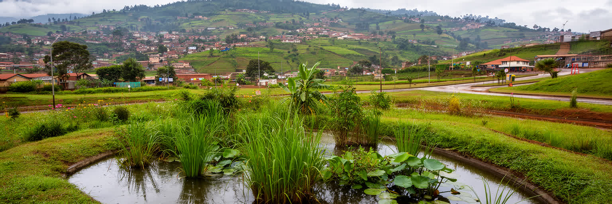
キガリは赤道に近いものの高地にあるため、気温は比較的穏やかで、長雨季と短雨季、乾季のリズムが生活を形づくります。涼しさは都市の魅力ですが、雨は斜面、谷、湿地、未舗装地、排水路に負担をかけます。急な開発で斜面が削られ、湿地が埋められ、排水が追いつかなくなると、土砂災害や浸水の危険が増します。ルワンダは環境政策を強く打ち出し、プラスチック袋規制、清掃活動、緑地管理、湿地保全を都市イメージにも結びつけてきました。これらはキガリの清潔さを支える一方、環境管理が住民の負担や取り締まりとして感じられる場面もあります。気候変動が雨の強さや乾季の長さを変えれば、都市インフラと低所得地区の脆弱性はさらに問われます。斜面の住宅で暮らす人ほど、雨の夜に土砂や排水を気にし、谷底の道を通る人ほど浸水で移動を止められます。市場や学校、病院へ向かう道が雨で使いにくくなれば、環境問題はすぐ生活問題になります。緑地は景観だけでなく、水を受け止め、暑さを和らげる都市の安全装置でもあります。環境政策を成功させるには、見える場所をきれいにするだけでは足りません。安全な住宅、排水の維持、斜面の土地利用、公共交通、廃棄物処理、涼める公共空間を一体で考える必要があります。キガリの環境都市像は、景観と生活の安全が両立して初めて説得力を持ちます。雨の備えが暮らしを守ります。日々の安心にもなります。
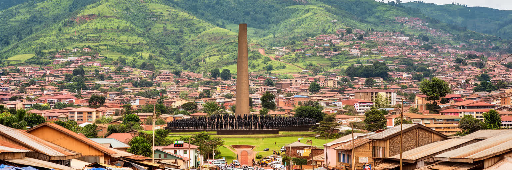
キガリは、巨大な人口規模で世界を圧倒する都市ではありません。しかし、国家再建、記憶の政治、行政効率、環境管理、ICT戦略、会議外交、丘陵住宅が一つの首都に凝縮されている点で重要です。清潔な街路、整った植栽、治安の良さは訪問者に強い印象を与えますが、それだけで都市を理解することはできません。追悼の場が示す暴力の記憶、強い統治が生む秩序と緊張、住宅費に悩む住民、仕事を探す若者、坂を移動する通勤者、工芸を売る女性、国際会議を支えるホテル労働者が同じ都市を作っています。キガリの魅力は、過去からの回復を未来志向の都市づくりへ変えようとする力にあります。一方で、その未来が誰に開かれているのか、誰が中心から遠ざけられるのかを見続ける必要があります。都市の成功を清潔さや投資環境だけで測ると、生活費、参加、表現、移転、若者の雇用という重要な課題が薄れます。逆に課題だけを見れば、住民が積み重ねてきた再建の努力も見えません。小さな首都であるからこそ、制度の変化は街路、住宅、市場、会議場、追悼施設、ラジオの話題にすばやく現れます。サッカー、合唱、夜の食事、子どもの通学、高齢者の通院も同じ都市の尺度です。東アフリカの中でキガリを読むことは、小国の首都が地理的な不利を制度、航空、会議、教育、デジタル化で補おうとする試みを読むことでもあります。秩序ある都市像の奥にある生活の声まで含めて見る時、キガリはより立体的に見えてきます。